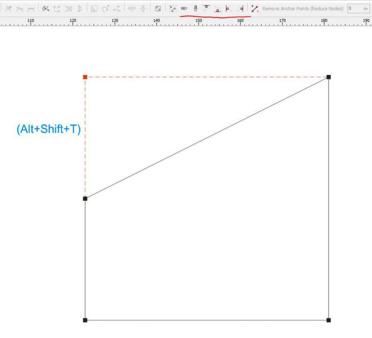

Node Align
Des425 / 23.11.2009, 14:10/00:41
Форум:
Node Align - макрос для выравнивания узлов.
Можно создать свои кнопки, а можно назначить комбинацию клавиш.

Alt+Shift+T (Node Align Top)
Alt+Shift+E (Node Align Y Center)
Alt+Shift+C (Node Align X Center)
Alt+Shift+B (Node Align Bottom)
Alt+Shift+L (Node Align Left)
Alt+Shift+R (Node Align Right)
Автор, если не ошибаюсь, wOxxOm